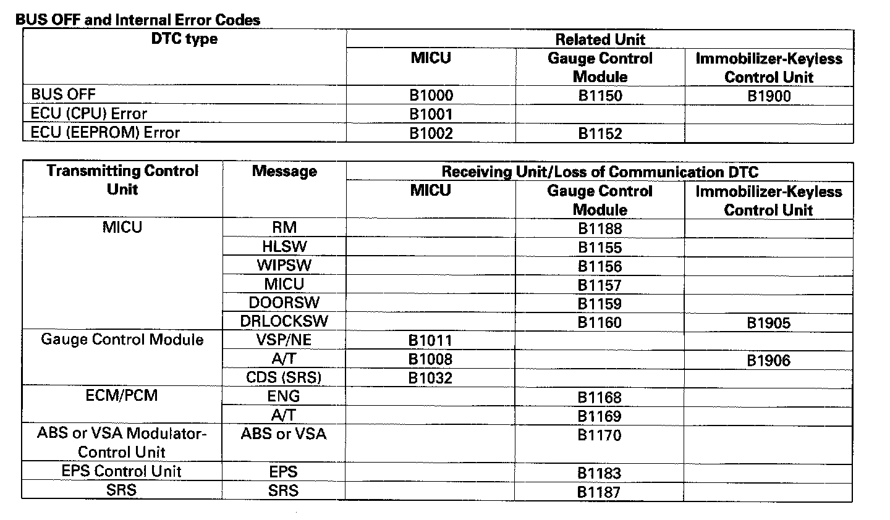

Without Scan Tool
How to clear the DTCWhile in Test Mode 1, press and hold down the SELECT/RESET button for more than 10 seconds.
Loss of Communication DTC cross-reference chart
When an ECU is unable to communicate with the other ECUs on the CAN circuit, the other control units will set loss of communication DTCs. Use this chart to find the control unit that is not communicating.
1. Find the Transmitting Control Unit that is in the same row as all of the loss of communication DTCs retrieved.

2. Do the input test for the transmitting control unit.